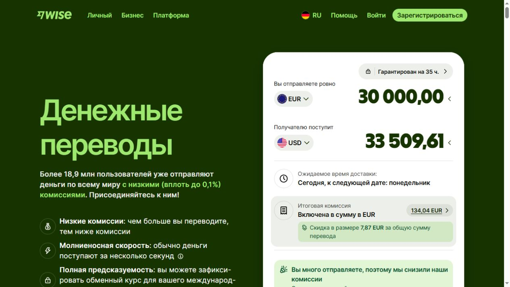
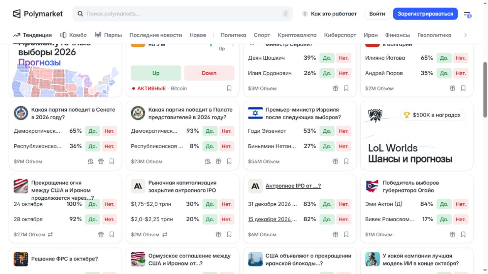
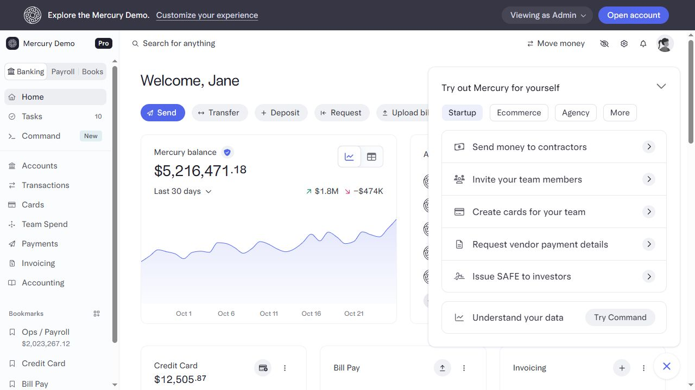
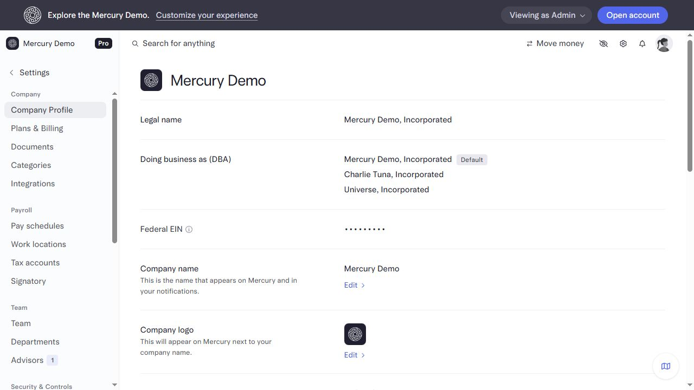
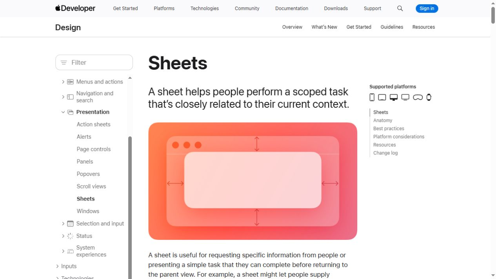
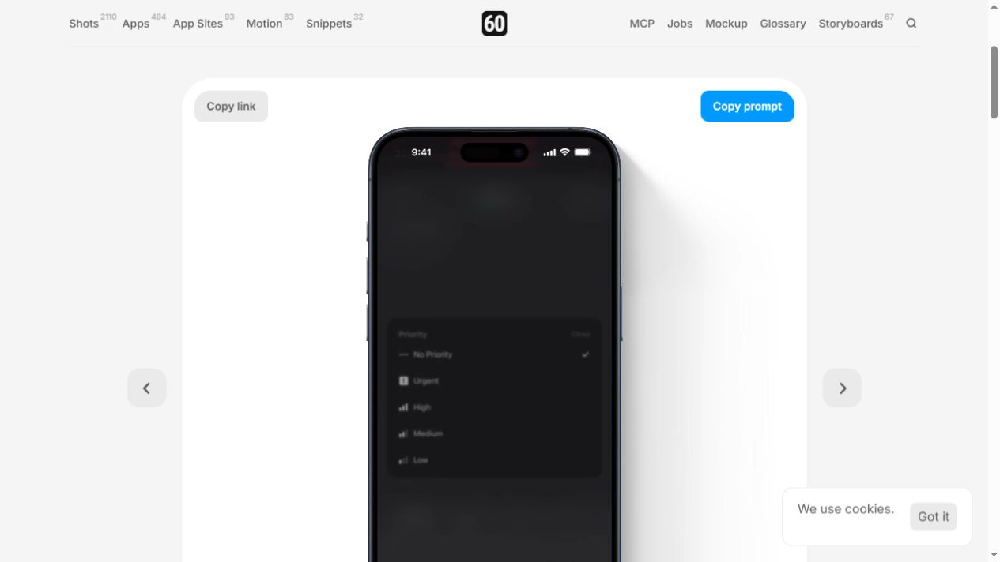
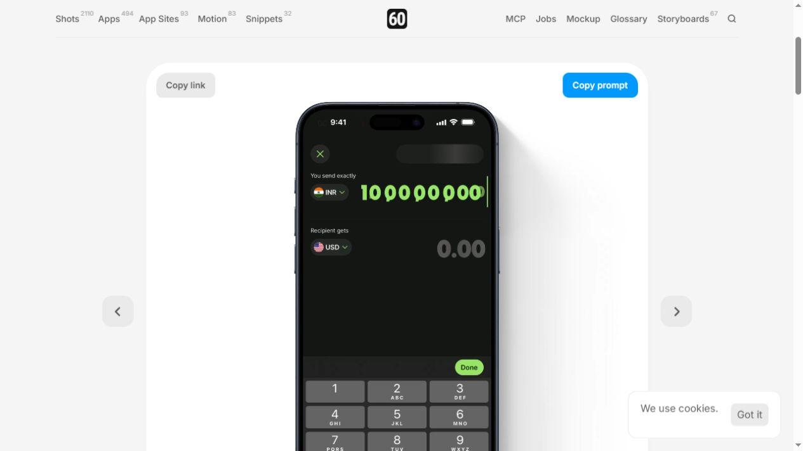
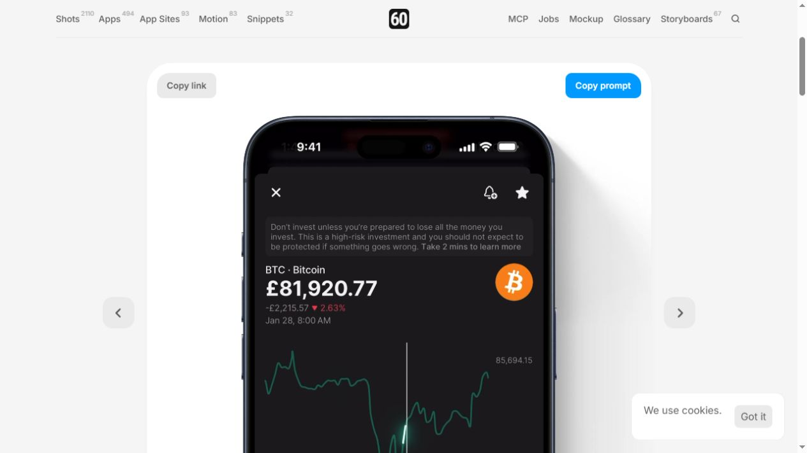

Wise · amount hierarchy

Use: separate the input, possible receipt and cost. Put quote validity beside the rate.
Leave: Wise branding and guaranteed transfer semantics.
Public web · exact source
Polymarket · compare outcomes

Use: question first, aligned comparable values, quiet secondary metadata.
Leave: tiny duplicated actions, outcome truncation, volume presented as liquidity.
Public web, scrolled · exact source
Mercury · stable destinations

Use: portfolio/activity destinations and contextual next action.
Leave: desktop density and invented balance graphs.
Public synthetic web demo · exact source
Mercury · explain a profile

Use: readable label/value rows and explicit local edits.
Leave: corporate tax settings and wide multi-column layout.
Public synthetic web demo · exact source
Apple · scoped interruption

Use: a sheet for a bounded task related to the current market; maintain cancellation and context.
Leave: modal treatment for every destination.
Official documentation, diagram · exact source
Linear · progressive controls

Use: reveal metadata when needed, explicit selected state, retained draft context.
Leave: small controls and casual popups for irreversible money actions.
iOS recording via60fps · exact source
Wise · numeric editing

Use: one dominant editable amount; persistent units; long-number and keyboard testing.
Leave: ornamental number motion and client-side quote substitutes.
iOS recording via60fps · exact source
Revolut · inspect history

Use: associate historical point, timestamp and value.
Leave: decorative glow and any fabricated history.
iOS recording via60fps · exact source